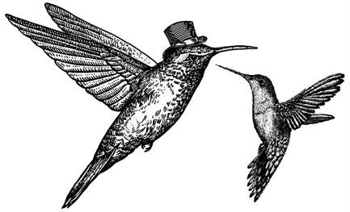

ACCRO AFFECTIF
(toxic)
"En devenant adultes, nous devons apprendre à prendre soin de nos besoins, sans avoir besoin que l'autre les prenne en charge. [...] Devenir adulte, c'est se séparer de cette dépendance-là ! " Jacques SALOME

La situation de dépendance affective, est un trait de personnalité fréquemment rencontré. Plus connu sous le terme de "dépendance affective", le trouble de la personnalité dépendante provoque des comportements extrêmes d’attachement et de soumission aux autres. Tantôt décrite comme le fait de ne rien pouvoir faire sans son conjoint, tantôt comme le fait de vouloir être aimé à tout prix, la dépendance affective n’apparaît dans aucune classification médicale sérieuse, en revanche, elle peut se cacher dans le trouble de la personnalité dépendante. Celui-ci se caractérise par un besoin permanent et excessif d’être épaulé, ce qui induit des comportements de soumission et d’attachement. Des attitudes qui ne se limitent pas au couple, mais qui s’étendent à la famille ou encore aux collègues de travail.
Etre attaché à son conjoint ou à sa famille, c’est sain. Mais dans le trouble de la personnalité dépendante, il y a quelque chose "de trop" qui induit de la souffrance. Soit ces personnes se considèrent comme incapables, ce qui les empêche de se débrouiller seules. Soit elles ont l’impression de ne pas être aimées, ce qui leur procure un sentiment d’insécurité affective. Dans les deux cas, la relation à l’autre est utilisée comme moyen de réassurance.
Les principaux signes de la dépendance affective sont :
• une tendance à solliciter en permanence l’avis de l’autre
• une difficulté à se séparer
• une difficulté à prendre une décision, seul
• une recherche d’approbation en permanence
• une demande permanente à l’autre de réassurance affective
• une tolérance à des choses intolérables de la part de la personne dont on est dépendant (brimades, humiliations, voire violence, etc.)
• une relation de type fusionnel
• des exigences de proximité, refus que l’autre s’éloigne
• de le suspicion
• une tendance à sur-solliciter le partenaire
• une difficulté à percevoir les signes rassurants envoyés par l’autre
• du chantage affectif
• une tendance à négliger les autres relations
• une faible affirmation de soi
Aussi, les signes psychiques de la dépendance affective sont :
• la crainte du célibat, de la solitude voire de l'abandon
• une quête affective
• une incapacité à se rassurer par soi-même et une recherche constante de sécurité
• du doute permanent sur l’affection de l’autre. Ce doute peut constituer des idées obsédantes
• une faible estime de soi.
• une incapacité à faire des choix
• une tendance à prioriser les sentimentss à court terme au détriment des conséquences néfastes prévisibles à long terme
• de l'impulsivité
Le principal danger est le risque d’accepter l’inacceptable. Les personnes dépendantes peuvent aller jusqu'à accepter la violence, qu'elle soit physique ou psychologique, ceci pour éviter de risquer de perdre le lien. Pour elles, la violence subie est moins grave que la perte de la personne dont elles sont dépendantes. Pourtant, toute violence devrait faire s’arrêter la relation immédiatement. Il n’y a pas de petite violence ou de bonne raison. Généralement, la violence physique est longtemps précédée de violence verbale (insultes etc…). C’est dès cet instant que les règles doivent être posées sans la moindre concession. Si le conjoint n’arrive pas à se tenir à un respect stricte de l’autre, la relation doit être reconsidérée.
Etre attaché à son conjoint ou à sa famille, c’est sain. Mais dans le trouble de la personnalité dépendante, il y a quelque chose "de trop" qui induit de la souffrance. Soit ces personnes se considèrent comme incapables, ce qui les empêche de se débrouiller seules. Soit elles ont l’impression de ne pas être aimées, ce qui leur procure un sentiment d’insécurité affective. Dans les deux cas, la relation à l’autre est utilisée comme moyen de réassurance.
Les principaux signes de la dépendance affective sont :
• une tendance à solliciter en permanence l’avis de l’autre
• une difficulté à se séparer
• une difficulté à prendre une décision, seul
• une recherche d’approbation en permanence
• une demande permanente à l’autre de réassurance affective
• une tolérance à des choses intolérables de la part de la personne dont on est dépendant (brimades, humiliations, voire violence, etc.)
• une relation de type fusionnel
• des exigences de proximité, refus que l’autre s’éloigne
• de le suspicion
• une tendance à sur-solliciter le partenaire
• une difficulté à percevoir les signes rassurants envoyés par l’autre
• du chantage affectif
• une tendance à négliger les autres relations
• une faible affirmation de soi
Aussi, les signes psychiques de la dépendance affective sont :
• la crainte du célibat, de la solitude voire de l'abandon
• une quête affective
• une incapacité à se rassurer par soi-même et une recherche constante de sécurité
• du doute permanent sur l’affection de l’autre. Ce doute peut constituer des idées obsédantes
• une faible estime de soi.
• une incapacité à faire des choix
• une tendance à prioriser les sentimentss à court terme au détriment des conséquences néfastes prévisibles à long terme
• de l'impulsivité
Le principal danger est le risque d’accepter l’inacceptable. Les personnes dépendantes peuvent aller jusqu'à accepter la violence, qu'elle soit physique ou psychologique, ceci pour éviter de risquer de perdre le lien. Pour elles, la violence subie est moins grave que la perte de la personne dont elles sont dépendantes. Pourtant, toute violence devrait faire s’arrêter la relation immédiatement. Il n’y a pas de petite violence ou de bonne raison. Généralement, la violence physique est longtemps précédée de violence verbale (insultes etc…). C’est dès cet instant que les règles doivent être posées sans la moindre concession. Si le conjoint n’arrive pas à se tenir à un respect stricte de l’autre, la relation doit être reconsidérée.
L’anxiété, sous tendue par des schémas dysfonctionnels comme des carences affectives dans l'enfance ou un syndrôme abandonnique, peuvent être à l’origine de la dépendance affective. Ainsi, quelqu’un qui a le schéma « en cas de rupture je ne trouverai personne d’autre » sera accroché à son conjoint actuel de façon possiblement dépendante, même si la relation est destructrice. La personne dépendante affective a tendance à privilégier son confort émotionnel à court terme au détriment des éléments rationnels qui montrent que la relation ne lui convient pas, qu'elle ne répondra pas à ses besoins.
Pour ces personnes, l’autonomie est un combat. Et cela ne concerne pas uniquement la sphère affective, elles sont dépendantes à tous les niveaux, y compris en ce qui concerne leur raisonnement. Elles adhèrent facilement aux idées et aux comportements des personnes qu’elles fréquentent.
Ensuite, le manque d’estime de soi ou de confiance en soi limitant l'autonomie et le libre arbitre peuvent également être en cause. En effet, cela pousse la personne dépendante à accepter tout et n’importe quoi de la part de son conjoint parce qu’elle ne se sent pas digne ou limiter. Les schémas de dévalorisation l’empêche d’avoir une vision équitable de sa faculté à réagir. Du coup, elle éprouve le besoin de compenser en acceptant plus que ce qu’elle devrait.
Par ailleurs, une hypersensibilité émotionnelle peut entraîner une charge émotionnelle telle que lorsque la personne dépendante est soumise à la tristesse ou à la crainte de perdre l’affection de l’autre, elle panique. Par conséquent et afin d'éviter cette perception douloureuse, elle accepte "tout" pour échapper à ce trop-plein émotionnel.
Enfin, un deuil mal digéré d’une relation précédente peut aussi être à l’origine de ce type de dépendance. C’est un phénomène proche d’une situation post-traumatique : la personne veut tout faire pour éviter la souffrance qu’elle a connue par le passé.
Certains troubles psychiques se voient plus souvent dans la dépendance affective. On peut citer notamment la dépression, la bipolarité, les troubles anxieux (trouble panique, trouble anxiété généralisée, phobie, phobie ou anxiété sociale) et les troubles de personnalité. Elle peut également induire certaines complications. Il y a d’abord les addictions notamment à l’alcool, pour gérer le stress de l’abandon mais à d’autres substances, pour se faire accepter d’un groupe social. D’autres complications peuvent s'additionner comme l’isolement, lorsque l’entourage est épuisé des sollicitations de la personne dépendance.
Pour ces personnes, l’autonomie est un combat. Et cela ne concerne pas uniquement la sphère affective, elles sont dépendantes à tous les niveaux, y compris en ce qui concerne leur raisonnement. Elles adhèrent facilement aux idées et aux comportements des personnes qu’elles fréquentent.
Ensuite, le manque d’estime de soi ou de confiance en soi limitant l'autonomie et le libre arbitre peuvent également être en cause. En effet, cela pousse la personne dépendante à accepter tout et n’importe quoi de la part de son conjoint parce qu’elle ne se sent pas digne ou limiter. Les schémas de dévalorisation l’empêche d’avoir une vision équitable de sa faculté à réagir. Du coup, elle éprouve le besoin de compenser en acceptant plus que ce qu’elle devrait.
Par ailleurs, une hypersensibilité émotionnelle peut entraîner une charge émotionnelle telle que lorsque la personne dépendante est soumise à la tristesse ou à la crainte de perdre l’affection de l’autre, elle panique. Par conséquent et afin d'éviter cette perception douloureuse, elle accepte "tout" pour échapper à ce trop-plein émotionnel.
Enfin, un deuil mal digéré d’une relation précédente peut aussi être à l’origine de ce type de dépendance. C’est un phénomène proche d’une situation post-traumatique : la personne veut tout faire pour éviter la souffrance qu’elle a connue par le passé.
Certains troubles psychiques se voient plus souvent dans la dépendance affective. On peut citer notamment la dépression, la bipolarité, les troubles anxieux (trouble panique, trouble anxiété généralisée, phobie, phobie ou anxiété sociale) et les troubles de personnalité. Elle peut également induire certaines complications. Il y a d’abord les addictions notamment à l’alcool, pour gérer le stress de l’abandon mais à d’autres substances, pour se faire accepter d’un groupe social. D’autres complications peuvent s'additionner comme l’isolement, lorsque l’entourage est épuisé des sollicitations de la personne dépendance.
EN RELATION

CONFIANCE
DEPENDANCE
CUPIDE-ON
PERSONNALITE
A-BANDON